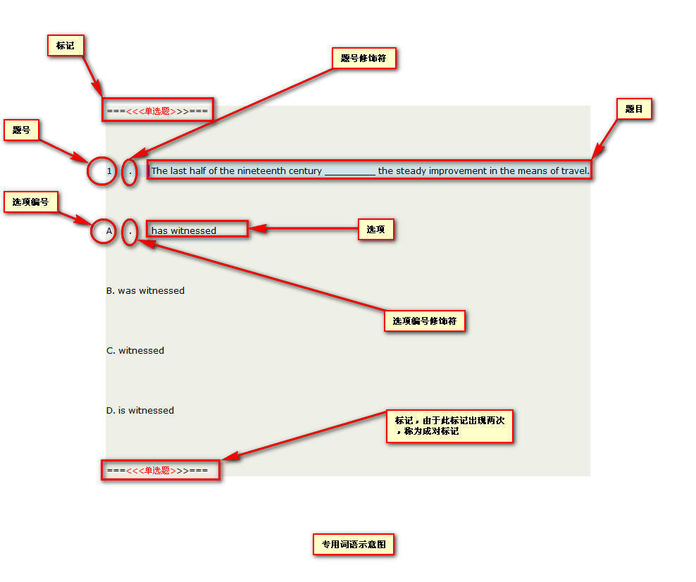

一，试题模板与答案模板必须保存或另存为utf-8编码。设置utf-8编码步骤如下：
1. 打开记事本。
2. 录入试题或答案到打开的记事本中。
3. 点击记事本->菜单栏->文件->保存/另存为。
4. 在弹出的另存为对话框中，将编码选项设置为UTF-8, 然后再点击保存
标记：指以三个半角等于号加上三个半角左尖括号加上文字描述加上三个半角右尖括号加上三个等于号组成的文字，称为标记。例：===<<<单选题>>>>>===
成对标记：指标记出现两次。例：===<<<单选题>>>>>=== ===<<<单选题>>>>>===
非成对标记：指标记仅出现一次。例：===<<<选项结束>>>>>===
修饰符：指划分题号和题目边界的符号。
题目：指试题的描述。例：1. 市场的含义？
题号：指每道试题的序号。题号必须是半角数字。例：1, 2, 3
题号修饰符：指划分题号和题目边界的符号。支持的修饰符有：半角括号：()，全角括号：（），中文顿号：、，半角句号：.。例：(1)， 1.，（1）， 1、
选项：指单选题或多选题备选答案的描述。例:A. 单选题一的备选答案
选项编号：指单选题或多选题选项的序号。选项编号必须是半角的大写字母。例：A B C
选项编号修饰符：指划分选项编号和选项边界的符号。支持的修饰符同题号修饰符。例：(A)， A.， （A），A、
前缀修饰符：指题号或选项编号左侧的修饰符。前缀修饰符可选，即可以有前缀修饰符，也可以没有前缀修饰符。
后缀修饰符：指题号或选项编号右侧的修饰符。后缀修饰符必须至少有一个。
区间模式：应用于答案模板的单选题型，指采用一个区间段方式来描述试题题号与试题答案的对应关系。例：1-5 ABCDE代表第一题的答案为A，第二题的答案为B，第三题的答案为C，第四题的答案为D，第五题的答案为E。
逐题模式：应用于答案模板的所有题型，指采用一对一的方式来描述试题题号与试题答案的对应关系。例：1.A 2.B 3.C 4.D 5.E代表第一题的答案为A，第二题的答案为B，第三题的答案为C，第四题的答案为D，第五题的答案为E。

目前支持的题型：单选题，多选题， 判断题，填空题，简单题，简答题，完形填空题
目前支持的标记：
单选题标记：===<<<单选题>>>===, 此标记为成对标记， 所有单选题放置在此成对标记之间。
题号定义：半角数字形式，支持的修饰符有()（）、.．符号有全半角之分，所有前缀修饰符均可选，至少要有一个后缀修饰符，必须位于行首。
选项编号定义：半角大写英文字母形式，支持的修饰符有()（）、.．符号有全半角之分，所有修饰符均可选。
试题解析定义：用反引号括起来的一段描述
注意：选项内不允许出现与题号或选项编号样式相同的字样，如果有，请改写成全角数字来解决冲突。
示例： ===<<<单选题>>>=== (1)The last half of the nineteenth century _________ the steady improvement in the means of travel. (A) has witnessed （B） was witnessed C、witnessed D. is witnessed `此处是本题的试题解析` （2）The shy girl felt _________ and uncomfortable when she could not answer her teacher's questions. A. amazed B. awkward C. curious D. amused `此处是本题的试题解析` 3、Ann never dreams of ________ for her to be sent abroad very soon. A. there being a chance B. there to be a chance C. there be a chance D. being a chance `此处是本题的试题解析` 4. It was very kind of you to do the washing-up, but you __________ it. A. mustn't have done B. wouldn't have done C. mightn't have done D. didn't have to do `此处是本题的试题解析` ===<<<单选题>>>===
多选题标记：===<<<多选题>>>===, 此标记为成对标记， 所有多选题放置在此成对标记之间。
题号定义：半角数字形式，支持的修饰符有()（）、.．符号有全半角之分，所有前缀修饰符均可选，至少要有一个后缀修饰符，必须位于行首。
选项编号定义：半角大写英文字母形式，支持的修饰符有()（）、.．符号有全半角之分，所有均修饰符可选。
试题解析定义：用反引号括起来的一段描述
注意：选项内不允许出现与题号或选项编号样式相同的字样，如果有，请改写成全角数字来解决冲突。
示例： ===<<<多选题>>>=== (1) Floods cause billions of dollars worth of property damage _________. (A) relatively （B） actually C、annually D. comparatively `此处是本题的试题解析` （2） We are all for your proposal that the discussion __________. A. be put off B. was put off C. should put off D. is to put off `此处是本题的试题解析` 3、These goods are __________ for export, though a few of them may be sold on the home market. A. essentially B. completely C. necessarily D. remarkably `此处是本题的试题解析` 4. The course normally attracts 20 students per year, ________ up to half will be from overseas. A. in which B. for whom C. with which D. of whom `此处是本题的试题解析` ===<<<多选题>>>===
判断题标记：===<<<判断题>>>===, 此标记为成对标记， 所有判断题放置在此成对标记之间。
题号定义：半角数字形式，支持的修饰符有()（）、.．符号有全半角之分，所有均修饰符可选，必须位于行首。
试题解析定义：用反引号括起来的一段描述
注意：每题独占一行。
示例： ===<<<判断题>>>=== 1. I'd rather not have coffee. `此处是本题的试题解析` 2. He is seriously ill. He is going to die. `此处是本题的试题解析` 3. He was on his way home.`此处是本题的试题解析` ===<<<判断题>>>===
填空题标记：===<<<填空题>>>===, 此标记为成对标记， 所有填空题放置在此成对标记之间。
题号定义：半角数字形式，支持的修饰符有()（）、.．符号有全半角之分，所有均修饰符可选，必须位于行首。
试题解析定义：用反引号括起来的一段描述
注意：本题型每个题必须独占一行。
示例： ===<<<填空题>>>=== 1. I()to you as soon as I()to London.`此处是本题的试题解析` 2. He doesn't feel well and()any food this morning.`此处是本题的试题解析` 3. He()not()me come in,for he()something with great interest.`此处是本题的试题解析` ===<<<填空题>>>===
简单题标记：===<<<简单题>>>===, 此标记为成对标记， 所有简单题放置在此成对标记之间。
小题号定义：半角数字形式，支持的修饰符有()（）、.．符号有全半角之分，前缀修饰符可选，必须位于行首。
试题解析定义：用反引号括起来的一段描述
注意：每个问题必须独占一行，忽略大题号定义。
示例： ===<<<简单题>>>=== （1）有些人认为某些数字会带来好运。`此处是本题的试题解析` （2）我认为数字和运气无关。`此处是本题的试题解析` ===<<<简单题>>>===
简答题标记：===<<<简答题>>>===, 此标记为成对标记， 所有简答题放置在此成对标记之间。
小题号定义：半角数字形式，支持的修饰符有()（）、.．符号有全半角之分，前缀修饰符可选，必须位于行首。
试题解析定义：用反引号括起来的一段描述
注意：每个问题必须独占一行，忽略大题号定义。
示例： ===<<<简答题>>>=== Directions: Read the followi ng passages carefully. Then answer the questions or complete the statements in the fewest possible words (not exceeding 10words). Culture shock is so named because of the effect it has on people when they enter a new culture. Experts have been interested in these effects and have agreed on five basic stages of culture shock. These stages are general and should only be used as a reference. Not every individual will go through each stage, and one stage may last longer that another for different individuals. The hardest thing for most travelers to deal with is the emotional "roller coaster" they seem to be riding. One moment they feel very positive toward the new culture, and the next moment very negative. It seems common that international visitors and immigrants vacillate between loving and hating a new country. Feelings of separation and alienation can be intensified if they do not have a sense of fitting in or belonging. Fatigue is another problem people face when entering a new culture. There can be a sense of a greater need for sleep. This is due not only to physical tiredness, but also to mental fatigue. This mental fatigue comes from straining to comprehend the language, and coping with new situations. The impact of culture shock can vary from person to person. There can be significant differences because some people may be better prepared to enter a new culture. Four factors which play into these are personality, language ability, length of stay, and the emotional support received. It is logical to think that when people are deprived of their familiar surroundings they will feel disoriented. One solution some have found is to bring a few small reminders of home. Pictures, wall hangings, favorite utensils, and keep sakes are all good candidates to make things feel more familiar. Another helpful activity is to establish little routines that become familiar over time. Even better is fitting things that were part of the regular routine back in the routine established in the new culture. This will make people feel more at home. `此处是本题的试题解析` ===<<<问题描述结束>>>=== 1. According to Para. one, experts have interests in 2. Emotional "roller coaster" refers 3. When entering a new culture, the problems people face are ===<<<问题结束>>>=== ===<<<简答题>>>===
完形填空题标记：===<<<完形填空>>>===, 此标记为成对标记， 所有完形填空题放置在此成对标记之间。
===<<<正文结束>>>===, 此标记为非成对标记。此标记放置在正文与选项之间。
===<<<选项结束>>>===, 此标记为非成对标记。此标记放置在选项结束与本题结束标记之间。
题号定义：半角两位以内的数字形式，支持的修饰符有()（）、.．符号有全半角之分，所有前缀修饰符均可选，至少要有一个后缀修饰符，必须位于行首。
选项编号定义：半角大写英文字母形式，支持的修饰符有()（）、.．符号有全半角之分，所有前缀修饰符均可选。
样式定义：首尾用"完形填空"注明，每题需要有"正文结束"和"选项结束"注明。
试题解析定义：用反引号括起来的一段描述
注意：选项内不允许出现与题号或选项编号样式相同的字样，如果有，请改写成全角数字来解决冲突。
示例： ===<<<完形填空>>>=== The task of being accepted and enrolled (招收) in a university begins early for some students. Long _(1)_ they graduate from high school. These Students take special _(2)_ to prepare for advanced study. They may also take one of more examinations that test how _(3)_ prepared they are for the university. In the final year of high school, they _(4)_ applications and send them, with their student records, to the universities which they hope to _(5)_. Some high school students many be _(6)_ to have an interview with representatives of the university. Neatly, _(7)_, and usually very frightened, they are _(8)_ to show that they have a good attitude and the _(9)_ to succeed. When the new students are finally _(10)_. `此处是本题的试题解析` ===<<<正文结束>>>=== 1. A. as B. after C. since D. before 2. A. courses B. disciplines C. majors D. subjects 3. A. deeply B.widely C. well D. much 4. A. fulfill B. finish C. complete D. accomplish 5. A. attend B. participate C. study D. belong 6. A. acquired B. considered C. ordered D. required 7. A. decorated B. dressed C. coated D. worn 8. A. decided B. intended C. settled D. determined 9. A. power B. ability C. possibility D. quality 10. A. adopted B. accepted C. received D. permitted ===<<<选项结束>>>=== ===<<<完形填空>>>===
单选题答案标记：===<<<单选题答案>>>===, 此标记为成对标记，所有单选题答案放置在此成对标记之间。
单选题答案： 单选题答案支持两种模式，1：区间模式（例,第1至5题答案分别对应ABCDE可以被写作：1-5 ABCDE）; 2：逐题模式(例,第1至5题答案分别对应ABCDE可以被写作：1.A 2.B 3.C 4.D 5.E)。
示例： ===<<<单选题答案>>>=== 1-3 ABC (4) D ===<<<单选题答案>>>===
多选题答案标记：===<<<多选题答案>>>===, 此标记为成对标记，所有多选题答案放置在此成对标记之间。
多选题答案： 多选题答案支持一种模式，1：逐题模式(例,第1题答案ABC，第2题答案BCD可以被写作：1.ABC 2.BCD)。
示例： ===<<<多选题答案>>>=== (1) AB （2） BC 3、CD 4.DA ===<<<多选题答案>>>===
判断题答案标记：===<<<判断题答案>>>===, 此标记为成对标记，所有判断题答案放置在此成对标记之间。
判断题答案： 判断题答案支持一种模式，1：逐题模式(例,第1题错误，第2题正确可以被写作：1.no 2.yes)。
示例： ===<<<判断题答案>>>=== (1). yes （2）no 3、yes ===<<<判断题答案>>>===
填空题答案标记：===<<<填空题答案>>>===, 此标记为成对标记，所有填空题答案放置在此成对标记之间。
填空题答案： 填空题答案支持一种模式，1：逐题模式(例,第1题有三个空，每个空的答案对1题1空，1题2空，1题3空可以被写作：1.1题1空|-1题2空|-1题3空) 注：每空之间用半角标记（|-）分隔。
示例： ===<<<填空题答案>>>=== 1.will write|-get 2.did not eat 3.did|-see|-was reading ===<<<填空题答案>>>===
简单题答案标记：===<<<简单题答案>>>===, 此标记为成对标记，所有简单题答案放置在此成对标记之间。
简单题答案： 简单题答案支持一种模式，1：逐题模式(同判断题)。
示例： ===<<<简单题答案>>>=== (1) Some people believe that certain numbers bring good luck 2、I think the numbers and luck has nothing to do ===<<<简单题答案>>>===
简答题答案标记：===<<<简答题答案>>>===, 此标记为成对标记，所有简答题答案放置在此成对标记之间。
简答题答案： 简答题答案支持一种模式，1：逐题模式(同判断题)。
示例： ===<<<简答题答案>>>=== (1) Cultural shock's effect on people|-unsteadily feeling toward new culture|-are emotional "roller coaster" and fatigue ===<<<简答题答案>>>===
完形填空题答案标记：===<<<完形填空题答案>>>===, 此标记为成对标记，所有完形填空题答案放置在此成对标记之间。
完形填空题答案： 完形填空题答案支持一种模式，1：逐题模式(例：第一道题有10个空，每个空对应4个选项，4个选项中只有一个是正确答案,可以写成:1.A|-B|-C|-D|-..., 1:代表题号，A:代表第一道题第一个空的正确答案，|-：代表每个空的分隔符，此分隔符必须是半角状态下输入的符号)。
示例： ===<<<完形填空题答案>>>=== 1. A|-B|-C|-D|-A|-B|-C|-D|-A|-B ===<<<完形填空题答案>>>===